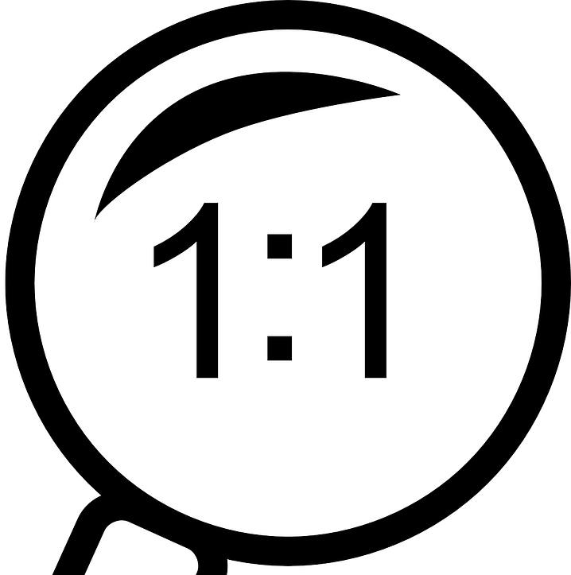

Resources
Over the past few years I've compiled a variety of resources and materials. Some of the resources I've compiled have student materials in their folders and are not linked. For those items, if you would like to learn more, please use the contact form on this website. Items with a resource are marked with the .
Use the icons below to quickly navigate between sections:
Chromebook Resources: 
1:1 Resources: 
Integration Resources: 
BreakoutEdu Resources: 

Chromebook Resources
1:1 Initiative Resources
Computer Science
Integration Resources
Breakout EDU
Most of the breakouts listed below have student work within their folders, and are not linked. Please use the contact form for more information about a breakout or if you have any questions about what implementation looks like. Items with a have an available document/resource.
Murder in Egypt
Grade: 6
Subject: Social Studies
Time: 90 minutes
This breakout was designed as an investigation into Ancient Egypt and the muder of Pharaoh Ramses by his son Pentawere. Through the breakout, students read accounts of the murder of the Pharaoh and work to answer the question, who killed him, and what relationship do they have to the Pharaoh. The breakout utilizes a Google Site to facilitate the content. It could be used as an introductory activity or one during/after a unit.
Murder in Rome
Grade: 6
Subject: Social Studies
Time: 90 minutes
This breakout was loosely based on an acitivity provided by http://www.mrroughton.com/. The original activity is an investigation into the death of Julius caesar to discover who his killer is. This breakout is organized along similar lines and uses some of the same resources, but there are some that have been modified to fit the breakout. For example, audio files are not included in the breakout. The ultimate question is still to figure out who, if anyone, is responsible for the death of Caeasar.
Pandora's Box
Grade: 6
Subject: Social Studies/ELA
Time: 90 minutes
This breakout is the first I ever designed and used with students, and as such is a little rough around the edges, but was a good start. Through this breakout, students work to uncover the the guilty party in a muder of someone who traveled to Ancient Greek mythological sites. To work through the breakout students use myths and other clues to open their box and then piece together evidence to find the killer.
Bubonic Plague
Grade: 6
Subject: Social Studies
Time: 90 minutes
Another breakout based on the http://www.mrroughton.com website, but one that I have heavily modified and created new content for. Students read and analyze documents to discover the cause of death for their victim. With 3 types of plague, there are three possible outcomes for the breakout, depending on the resources each group is given
JFK Assassination
Grade: 8
Subject: ELA
Time: 45 minutes
This breakout is designed for students to analyze primary resources and answer the question of whether there is or is not a conspiracy surrouding the assassination of JFK. Answering the question requires students to work their way into the box where the get access to the most of the content. Activities outside the box are designed as team building activities. True analysis would take more than the allotted 45 minutes.
Exploring the Holocaust
Grade: 8
Subject: ELA
Time: 45 minutes
This breakout was one of the hardest for me to design. Breakouts by nature, are meant to be fun and engaging, but the Holocaust is not a fun topic. I wantedto be very intentional about not trivializing the experience, while still giving kids an engaging activity. Students work through the breakout by analyzing aerial photographs from WWII to see if they can find concentration camps from the images. Some photos do contain camps, others do not.
Book Genre
Grade: 6
Subject: ELA
Time: 90 minutes
Many of my 6th grade breakouts are themed around the plague because students find it interesting, and if you do multiple throughout the year, you can tie them together into a story. This breakout was designed for a class to review different book Genres through a breakout. Students have diffrent books and look them up to figure out what genre they are. By placing the correct genre into a Google Form, they can submit. The second phase of the breakout has students reading about Marie Curie and placing information about her into another form to find the final lock
Before the Revolution
Grade: 8
Subject: Social Studies
Time: 45 minutes
This breakout was designed to have students look at the buildup to the American Revolution and match different riddles to famous individuals. By answering the riddle with the correct individual, they receive a lock answer. It is important in this breakout to either have a black light, or a "hacked" black light. My post about BreakoutEdu on the home page lets you know how to do this. The simplest part of the breakout involves students placing colonies in the correct order based on their foundation date.
Latitude and Longitude
Grade: 7
Subject: Social Studies
Time: 45 minutes
One difference between this breakout and others I have designed is that students move around the room to "visit" different locations. It would be helpful to have the room divided into different quadrants or "hemispheres". This breakout also uses resource cards to "travel" to different locations. Each group gets 1 more resource card than the number of locations to "travel" to. This is to prevent them from using a brute force method of solving a problem.
Thanksgiving
Grade: 6
Subject: Any
Time: 45 minutes
The primary focus of this breakout is teambuilding. Students work to solve a modern muder mystery by finding the killers connection to the old Jamestown colony. Through looking at these connections and solving the breakout clues, students discover that one of the mystery individuals has a connection to old Jamestown and some fictional foul deeds that took place back then.